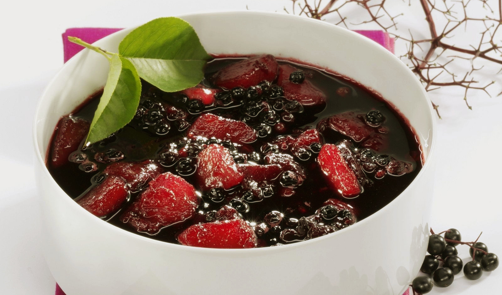

Elderberry Soup
I hold great admiration for elderberry soup, a traditional dish that remains popular throughout many European countries to this day. Made from the berries of the elderberry plant, this sweet and tangy soup not only tantalizes the taste buds but also offers numerous health benefits. Rich in antioxidants, vitamins, and minerals, elderberries have been used as a natural remedy for various ailments such as colds, flu, and inflammation since our great Viking age. Furthermore, the soup is believed to be an effective cure for sore throats and respiratory issues. With its unique taste and numerous health benefits, elderberry soup is a delightful and nutritious option for those seeking a traditional dish. It can be served as a side dish or a standalone dessert, and its flavor will undoubtedly leave a lasting impression on anyone who tries it.
Ingredients
- 1 lb Elderberries
- 3 cups water
- Honey to taste
- Apples, rosehips etc (optional)
Directions
- Boil the elderberries in water.
- When the soup is cooked through and the berries have broken down, add honey for taste.
- While this soup is tasty in itself you can also add apples, rosehip or stinging nettle seeds during the cooking process
Recipe Credit: Foteviken Viking Museum
Image Credit: Eat Smarter